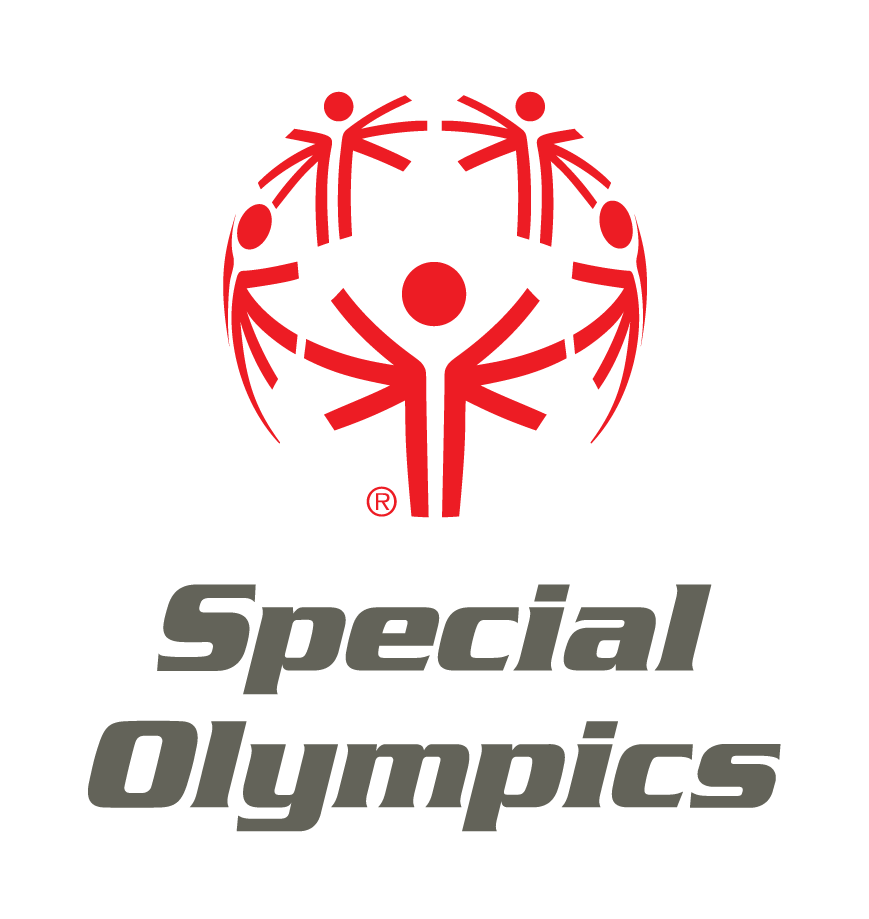
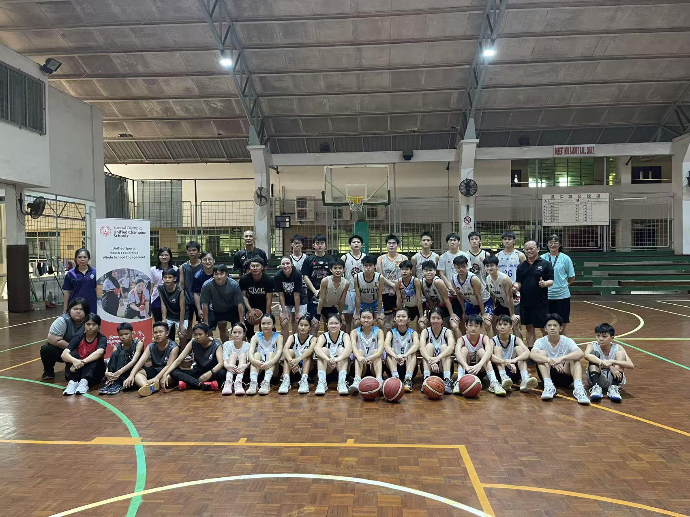

About Special Olympics
Learn About Our Movement
Special Olympics is a global movement that transforms lives through the joy of sport, every day. Below you'll find key information about our organization and impact.
What is Special Olympics?
An International sport organization dedicate to empowering individuals with intellectual
disabilities physically, socially and mentally through year-round sport training & competitions.
How many people does Special Olympics serve?
There are more than 5 Million athletes in 180 countries with intellectual disabilities involved in
Special Olympics Programs around the world.
What is Special Olympics' mission?
To provide a platform for Year-round sports training and atheletic competitions in a variety of
Olympic-type sport.
What impact does Special Olympics have on athletes?
Improved physical fitness & motor skills, greater self-confidence and poositive self image. Mental,
social and spiritual growth and enjoying life in a Community. Ulitmetely to discover not only new
abilities and talents but "Their Voice" as well.
Who Leads Special Olympics?
Eunice Kennedy Shriver was the founder of the Special Olympics. The first Special Olympics Games was
held in July 1968 in Chicago. Timothy P. Shiriver PH.D is currently the chairman of the Board,
Special Olympics International.
Who is Eligible to participate in Special Olympics?
An athelete must be at least eight years old & identified by an agency or provessional as having one
of the following conditions: Intellectual disabilities, cognitive, or significant learning or
vocational problems due to cognitive delay that requres specially designed instructions.
Infographic Spotlight
Unified Sports
Promoting social inclusion through sport by bringing together athletes with and without intellectual disabilities to train and compete on the same team.
